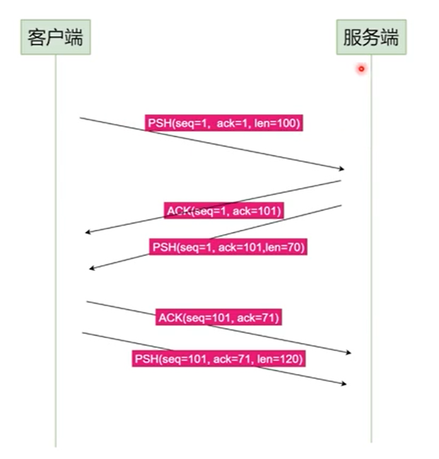
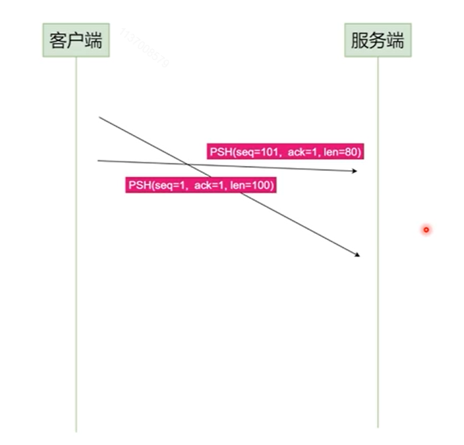
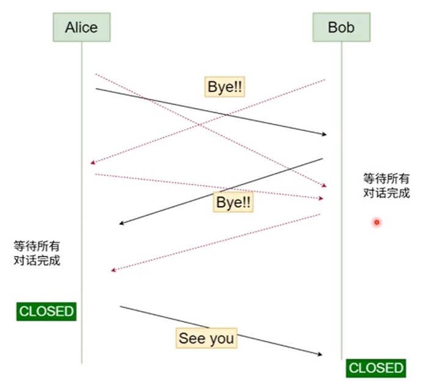
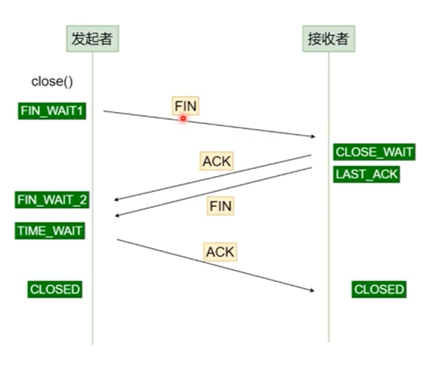

TCP 三次握手

- 客户端调用
connect方法，然后客户端进入SYN_SEND - 客户端接收到之后，会进入
SYN_RECEIVED状态，然后发送一个ACK，表示已经确认收到请求 - 然后客户端收到之后会进入
ESTABLISHED状态，然后客户端还会发送一个ACK，告诉服务端已经收到了 - 然后服务端收到之后，会进入
ESTABLISHED

假设 A 为客户端，B 为服务器端。
- 首先 B 处于 LISTEN（监听）状态，等待客户的连接请求。
- A 向 B 发送连接请求报文，SYN=1，ACK=0，选择一个初始的序号 x。
- B 收到连接请求报文，如果同意建立连接，则向 A 发送连接确认报文，SYN=1，ACK=1，确认号为 x+1，同时也选择一个初始的序号 y。
- A 收到 B 的连接确认报文后，还要向 B 发出确认，确认号为 y+1，序号为 x+1。
- B 收到 A 的确认后，连接建立。
三次握手的原因
第三次握手是为了防止失效的连接请求到达服务器，让服务器错误打开连接。
客户端发送的连接请求如果在网络中滞留，那么就会隔很长一段时间才能收到服务器端发回的连接确认。客户端等待一个超时重传时间之后，就会重新请求连接。但是这个滞留的连接请求最后还是会到达服务器，如果不进行三次握手，那么服务器就会打开两个连接。如果有第三次握手，客户端会忽略服务器之后发送的对滞留连接请求的连接确认，不进行第三次握手，因此就不会再次打开连接。
关于数据同步

- 发多个，返回多个
- 发多个，到达顺序不一致
- 收到的也不一定能保证顺序
所以我们需要给消息加上编号。也要保证编号的唯一性、顺序性等（时差等）。
- 使用发送接收时间
- 要解决服务器时差
- 使用自增序号
- A-B-A-B 类型会话可以解决？
- A-（AB）-B 类型会话如何解决？
TCP/IP 协议的处理方法
消息的绝对顺序使用 SEQ 和 ACK 这一对元组描述
- SEQ（Sequence）：这个消息发送之前一共发送了多少字节
- ACK（Acknowledge）：这个消息发送钱一共收到了多少字节



TCP 滑动窗口
窗口是缓存的一部分，用来暂时存放字节流。发送方和接收方各有一个窗口，接收方通过 TCP 报文段中的窗口字段告诉发送方自己的窗口大小，发送方根据这个值和其它信息设置自己的窗口大小。
发送窗口内的字节都允许被发送，接收窗口内的字节都允许被接收。如果发送窗口左部的字节已经发送并且收到了确认，那么就将发送窗口向右滑动一定距离，直到左部第一个字节不是已发送并且已确认的状态；接收窗口的滑动类似，接收窗口左部字节已经发送确认并交付主机，就向右滑动接收窗口。
接收窗口只会对窗口内最后一个按序到达的字节进行确认，例如接收窗口已经收到的字节为 {31, 34, 35}，其中 {31} 按序到达，而 {34, 35} 就不是，因此只对字节 31 进行确认。发送方得到一个字节的确认之后，就知道这个字节之前的所有字节都已经被接收。

TCP 四次挥手

不可以在客户端发起关闭请求的时候立即关闭连接。以防止还有消息未发送或未到达。
所以 TCP/IP 中是这么做的：

- 关闭连接的发起者启用
close方法，自身进入FIN_WAIT1状态，发送 FIN 报文给接收端 - 接收端接受到
FIN报文之后，会进入CLOSE_WAIT状态。 - 然后等待发送完所有未发送的请求之后，自身会进入
LAST_ACK状态，发送FIN报问给发起者 - 发起者接受到之后会进入
TIME_WAIT状态，然后给接受者一个响应ACK，接受者会进入CLOSED状态 - 然后在一段时间内等待，以防止网络拥堵导致包还未到达。时间结束之后，发起者会直接进入
CLOSED状态

以下描述不讨论序号和确认号，因为序号和确认号的规则比较简单。并且不讨论 ACK，因为 ACK 在连接建立之后都为 1。
- A 发送连接释放报文，FIN=1。
- B 收到之后发出确认，此时 TCP 属于半关闭状态，B 能向 A 发送数据但是 A 不能向 B 发送数据。
- 当 B 不再需要连接时，发送连接释放报文，FIN=1。
- A 收到后发出确认，进入 TIME-WAIT 状态，等待 2 MSL（最大报文存活时间）后释放连接。
- B 收到 A 的确认后释放连接。
四次挥手的原因
客户端发送了 FIN 连接释放报文之后，服务器收到了这个报文，就进入了 CLOSE-WAIT 状态。这个状态是为了让服务器端发送还未传送完毕的数据，传送完毕之后，服务器会发送 FIN 连接释放报文。
TIME_WAIT
客户端接收到服务器端的 FIN 报文后进入此状态，此时并不是直接进入 CLOSED 状态，还需要等待一个时间计时器设置的时间 2MSL。这么做有两个理由：
- 确保最后一个确认报文能够到达。如果 B 没收到 A 发送来的确认报文，那么就会重新发送连接释放请求报文，A 等待一段时间就是为了处理这种情况的发生。
- 等待一段时间是为了让本连接持续时间内所产生的所有报文都从网络中消失，使得下一个新的连接不会出现旧的连接请求报文。